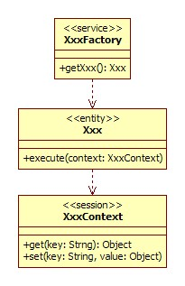
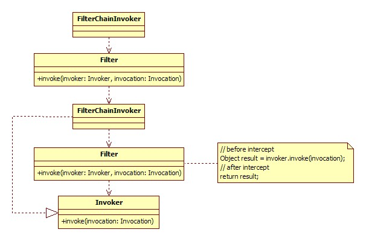

Some in the design of the basic common sense
http://javatar.iteye.com/blog/706098
Recently told the new team some design on the common sense, is likely to be new and some other help, the thought of a few temporarily, first write here.
The API and SPI separation
Framework or component there are generally two types of customers, one is a consumer, is an extension.API (Application Programming Interface) is used to users, and SPI (Service dojo.provide Interface) is used to expand.At design time, try to put them off, and don't mix.In other words, the user is can't see write the implementation of the extension.
For example, a Web framework, it has an API interface to call the Action, there is a the execute () method, which is for the user to write business logic.Then, Web frameworks have a SPI interface to extend the control output, such as velocity templates output or a json output, etc.If this Web framework using an inheritance VelocityAction and a JsonAction as extension of the Action, with output velocity templates will inherit VelocityAction, want to use the json output will inherit JsonAction, this is the opposite of the API and SPI no separation example, SPI interface in the API interface.

Is a reasonable way, there is a separate Renderer interface, VelocityRenderer and JsonRenderer implementation, Web framework will transfer the output of the Action to the Renderer interface for rendering output.

Service domain/entity/session domains separation
Any framework or component, there will always be the core domain model, such as: Spring Bean, Struts Action, Service of Dubbo, Napoli Queue, and so on.The core areas of the model and its component is called physical domain, it represents our goal to operate on itself.Physical domain is thread-safe, usually either through the same class, sync, or copy the way.
Service domain, that is, behavior domain, it is the function of the components, but also is responsible for the entity and session domains of life cycle management, such as Spring ApplicationContext, Dubbo ServiceManager, etc.Service domain objects often is heavy, and is thread-safe, and serve all calls to a single instance.
What is a session?Is an interactive process.Session key is the concept of context, the context is what?For example, we said: "old place", the "old place" is the context information.Why do you say "old place" other person will know, because we defined earlier the specific content of the "old place".So, the context often hold state variables in the process of interaction, etc.The session object, were generally mild and every request to create an instance, destroyed after the request.In short: the meta information held by the entity domain, the temporary state of a request by the session domain, by the service domain throughout the entire process.

On the important process to interceptor interface
If you want to write a remote invocation framework, the remote call block the process should have a unified interface.If you want to write an ORM framework, that at least the SQL execution, the Mapping process to intercept interface;If you want to write a Web framework, the request execution should be interception interfaces, and so on.No common framework can Cover all requirements, allowing external behavior, is the basic extension of the framework.Before a remote call, so that if someone wants to verify ordered CARDS, verification of black and white list, log statistics;If someone wants to add paging under packing before SQL execution, do data access control, statistics under the SQL execution time.If someone wants to check before the request execution, packaging, input and output flow request quantity statistics, and so on, can accomplish on their own, rather than into frame inside.Interception interfaces, usually to encapsulate process itself with an object, to the interceptor chain, such as: remote calls the main process for the invoke (), the interceptor interface to invoke usually (Invocation), Invocation object encapsulates the would have the execution context, and Invocation in an invoke () method, performed by the interceptor decide when, at the same time, also on behalf of the interceptor Invocation itself, such a interceptor Invocation is actually the process of packaging the next interceptor, until the last interceptor Invocation is packing the final invoke () process;Similarly, the main process for the execute SQL (), the interceptor interface is usually the execute (Execution), principle.Can implement ways, of course, the above is only for example.

The important status of sending events and set aside to monitor interface
Here to tell the difference between an event and the interceptor above, the interceptor is in the process of intervention, it is part of the process, is based on process behavior, and event is based on state data, any behavior changes of the same condition, the event should be consistent.Event is usually after the event notification is a Callback interface, the method name is usually past tense, such as onChanged ().Remote invocation framework, for example, when the network disconnect or even should send out an event, when there is an error can also be considered an event, such peripheral applications could be observed within the framework of change, make corresponding adjustment.

Extension interface functions as a single, composability
For example, the remote invocation framework agreement is to replace it.If only provide a general extension interface, switch can deal, of course, but the protocol support can be subdivided into the underlying communication, serialization, dynamic proxy mode and so on.If the interface split, orthogonal decomposition, will be easier to reuse existing logical extension, and just replace a part of the implementation strategy.Of course the decomposition the granularity of the need to grasp.
Micronucleus plug-in, equal treatment to the third party
"A good framework of development, abide by the concept of micronucleus.Eclipse is OSGi microkernel, Spring's microkernel is the BeanFactory, Maven microkernel is breadth.With functional core is usually should not be, but a life cycle and integrated container, so that each function can interact through the same way and extension, and any function can be replaced.If they do not microkernel, must be at least equal treatment to a third party, namely, the author can realize the function of extension should can be done by extending all the way.The author want to regard themselves as extension, so as to ensure framework of sustainability and stability of the outside introversion.
Don't control the external object lifecycle
Such as the above said the Action using the interface and the Renderer extension interface.Framework if let users or extend the Action or the Renderer implementation class name of the class or kind of meta information submitted, then internally by reflecting newInstance () to create an instance of this framework is to control the Action or the Renderer implementation class life cycle, the Action or the Renderer physical, frameworks do it himself, external extension or integration are powerless.Good idea is to let the user or extend the Action or submitted to the realization of the Renderer class instance, framework just use these instances, is how to create these objects, how to destroy, had nothing to do with frame, frame up to provide assistant management tools, rather than absolute control.
Configurable must be programmable, and maintain friendly CoC conventions
Framework using the environment uncertainty because of the many, there will always be some configuration, usually to a specified name classpath straight sweep configuration, or startup allows you to specify the configuration path.As a common framework, should do all can do configuration file must be able to programmatically, or when the user needs to be your frame with another frame integration will bring a lot of unnecessary trouble.
In addition, as far as possible do a standard contract, if the user has to do things by some sort of agreement, there is no need for the configuration items.Such as: configuration templates location, you can agree, if in the templates directory doesn't have to match, if you want to change the directory, and configuration.
Distinguish between commands and queries, clear pre-conditions and post-conditions
This is part of the design by contract, try to keep to a return value method is to query methods, void return method is to command.Query methods are usually idempotence, without side effects, also is not change any state, the n results are the same, such as the get a property value, or query a database record.Command is to point to have side effects, namely will change state, such as set a value, or update a database record.If you have modified the status of the operation, do a query returns again, if possible, to split it into writing reading separation of the two methods, such as: User deleteUser (id), delete users and returns the deleted users, consider to the getUser () and void deleteUser ().In addition, each method is front-facing assert that the legitimacy of the incoming parameters, as far as possible the rear assertion returns the legitimacy, and documented.
Incremental extension, and not to extend the original core concept
refer to：expansibility